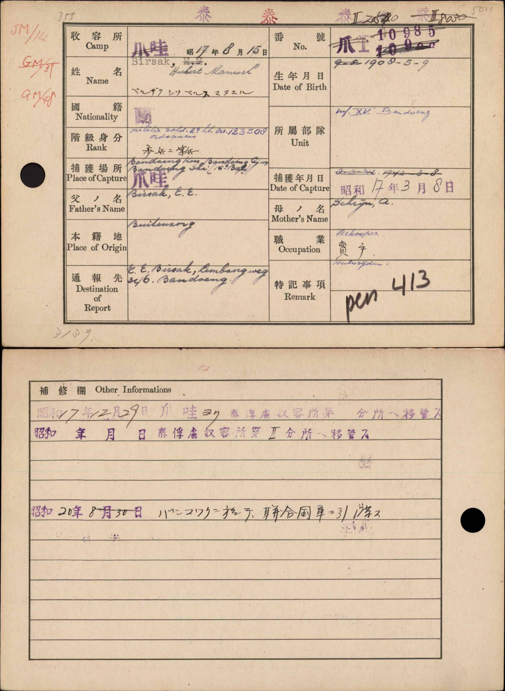
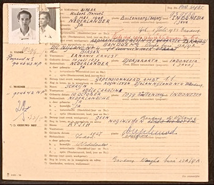

Japanse interneringskaart · IMG_7923.jpeg
Persoonsgegevens, eenheidsnotitie “Inf. XV Bandoeng” en registratie van krijgsgevangenneming.
← Terug naar Indisch Beeldarchief
Onderzoeksdossier — Hubert Manuel Birsak · peildatum 18 november 2026
De vier originele scans zijn nu aanwezig in de GitHub-repository. Klik op een afbeelding om de scan op volledige grootte te openen. Bestandsnamen zijn behouden zoals geüpload.

Persoonsgegevens, eenheidsnotitie “Inf. XV Bandoeng” en registratie van krijgsgevangenneming.

Document met twee portretten en handgeschreven velden; identificatie van de afgebeelde personen blijft voorbehouden.

Pagina 1 van de lijst van militairen die op 20 maart 1946 van Siam naar Batavia vertrokken.

Bevat de vermelding BIRSAK H.M., Mil.sld., stamboeknummer 123508.
Naam Birsak, Hubert Manuel; geboortedatum 1908-05-09; eenheidsnotitie “Inf. XV Bandoeng”; datum krijgsgevangenneming 8 maart 1942. Doorgehaalde nummers en sommige handgeschreven velden vragen nadere transcriptie.
Aangeleverd persoonsdocument met twee portretten en handgeschreven velden. Documentsoort en volledige tekst zijn nog niet betrouwbaar vastgesteld; de portretten worden niet zonder aanvullend bewijs als Hubert geïdentificeerd.
Lijst van militairen die op 20 maart 1946 van Siam naar Batavia vertrokken. Pagina 1 is context; Hubert staat op pagina 2.
Bevat de vermelding BIRSAK H.M., rang Mil.sld. (militair soldaat), stamboeknummer 123508.
Het 15e Bataljon Infanterie had zijn kampement in Bandoeng. Tjikoedapateuh werd tijdens de Japanse bezetting ingericht in de voormalige KNIL-kampementen van het 15e Bataljon, het 1e Depot Bataljon en de luchtdoelartillerie. De terreingrenzen worden in kampbronnen aangeduid als Kampementstraat, Noorder Kampementstraat, Van Oldenbarneveltweg en Noorder Magazijnstraat.
Volgens Ons Land functioneerde Tjikoedapateuh van maart 1942 tot 28 april 1945 als krijgsgevangenkamp, vanaf 15 januari 1945 tot 23 augustus 1945 als mannenkamp en van 23 augustus 1945 tot 1946 als opvangkamp. Dit zijn opeenvolgende/overlappende kampfuncties; de samenstelling van de bevolking veranderde.
De historische straatgrenzen zijn bekend uit kampbeschrijvingen, maar zijn nog niet gegeorefereerd aan een betrouwbare historische plattegrond en huidige kaartlaag. We tonen daarom geen ongecontroleerde exacte pin.
Open kaartzoekingang voor Kampementstraat, Bandung
De officiële zoekhulp van het Nationaal Archief maakt duidelijk dat er geen algemene naamindex is voor alle KNIL-stamboeken. Eerst moet worden vastgesteld of Hubert in Nederland of in Nederlands-Indië is aangenomen. Zijn geboorteplaats Buitenzorg bewijst op zichzelf niet waar hij in dienst trad.
Belangrijk: stamboeken vermelden doorgaans indiensttreding, rang, wapenonderdeel, overplaatsingen en krijgshandelingen. Ze vermelden niet de plaatsen waar de militair gelegerd was en bevatten geen portretfoto’s. Voor het aantonen van de feitelijke plaatsing in Bandoeng moeten daarom ook bataljons- en garnizoensdocumenten worden gezocht.
Bronnen: Nationaal Archief — KNIL onderofficieren en soldaten; Oost-Indisch Boek 1832–1936; SAIP 2.10.50.03.
Het Nationaal Archief meldt dat de persoonsdossiers van het Oorlogsarchief Nederlandse Rode Kruis momenteel worden gedigitaliseerd. Nieuwe aanvragen voor NRK-onderzoek zijn daarom niet mogelijk tot en met 15 februari 2027. Deze route staat op de vervolgagenda voor na die datum. Voor algemene vragen verwijst het Nationaal Archief naar info@nationaalarchief.nl.
Bron: Nationaal Archief — Oorlogsarchief Nederlandse Rode Kruis.
Een eerder familie-onderzoek in Notion bevatte al de transportlijst als scan NL-HaNA_2.13.108_13_0031. De officiële inventaris bevestigt dat inventarisnummer 13 gaat over demobilisatie van personeel en evacuatie uit Thailand, 1945–1946. Dit is dus de primaire archiefreeks waarin de aangeleverde Siam–Batavia-transportlijst thuishoort.
De officiële inventaris en een selectie uit het archief noemen deze stukken expliciet. Inventarisnummers 13 en 67 zijn als digitaal beschikbaar vermeld in de inventarisweergave; de onderliggende bestanden moeten nog op Hubert/123508 worden gecontroleerd. Bronnen: Nationaal Archief 2.13.108, PDF-inventaris, inventarisnummer 67 in Afscheid van Indië.
Belangrijke correctie in de onderzoeksprioriteit: omdat de aangeleverde transportlijst zelf is geïdentificeerd als scan NL-HaNA_2.13.108_13_0031, moet eerst de volledige inventaris 13 worden onderzocht. Dit kan meer directe informatie opleveren over Huberts repatriëring dan een brede, algemene zoekopdracht naar krijgsgevangenen.
Bronkritiek: secundaire namenlijsten zijn wegwijzers naar archiefbronnen, niet de originele staat van dienst. Het dossier houdt persoonsidentificatie, transcriptie en eenheidshypothese uit elkaar. Externe afbeeldingen zijn niet zonder rechtencontrole hergepubliceerd.